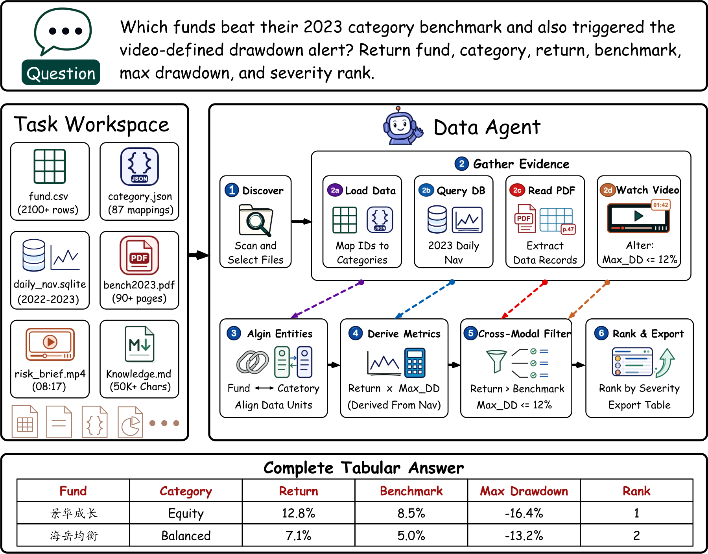
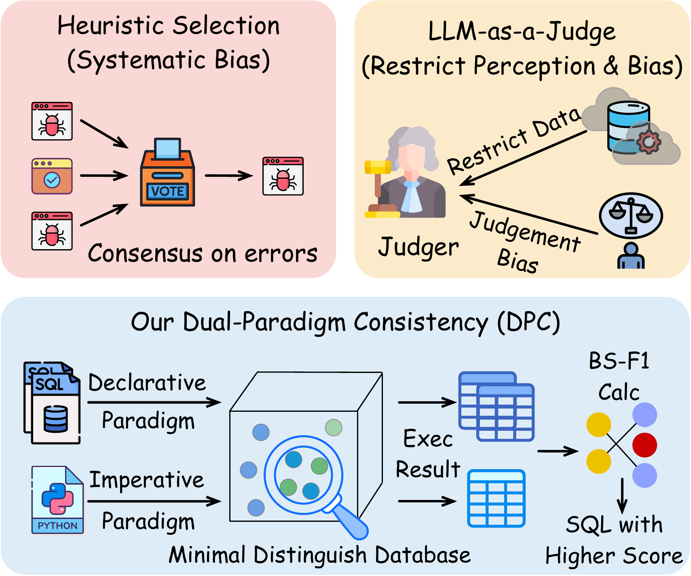
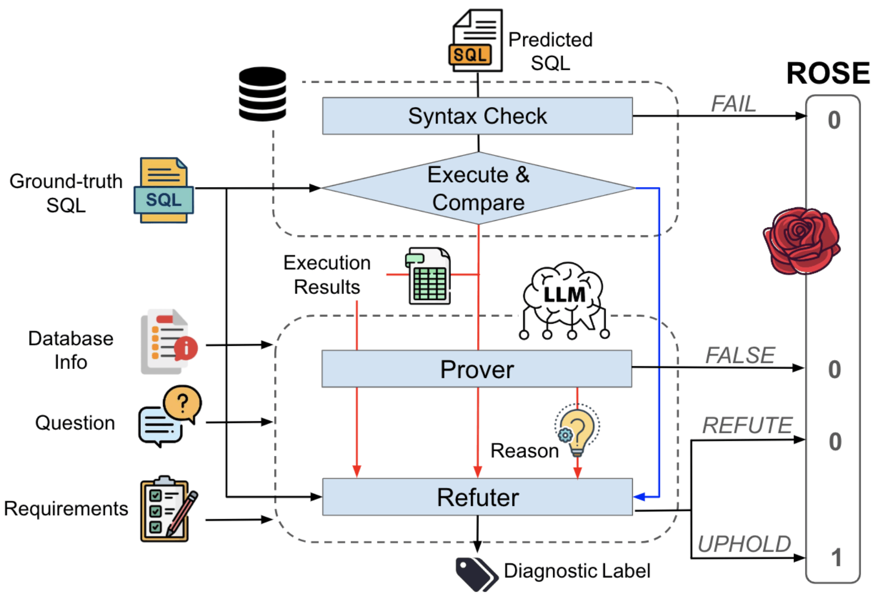
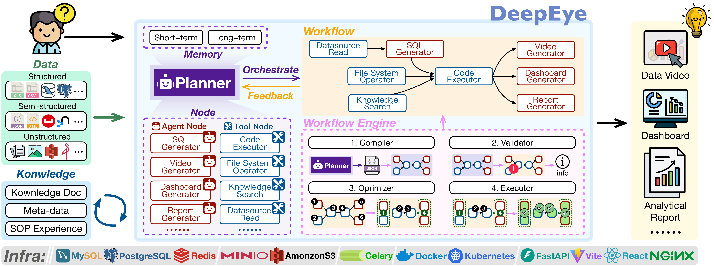
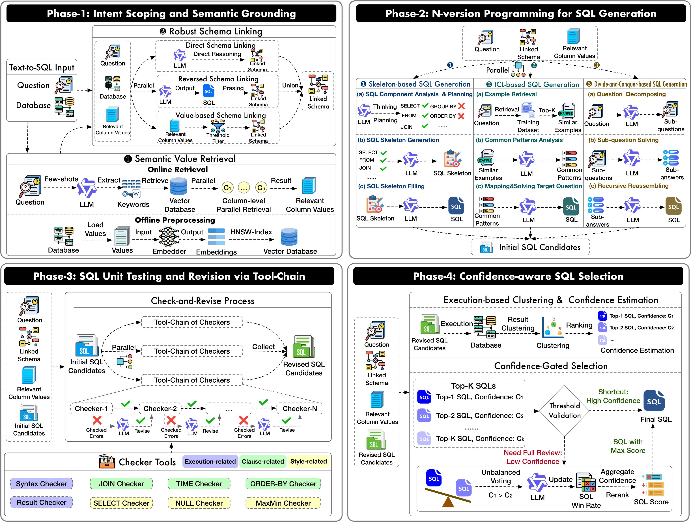
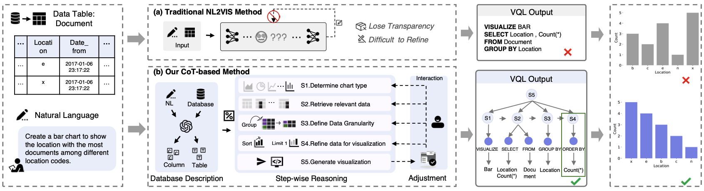
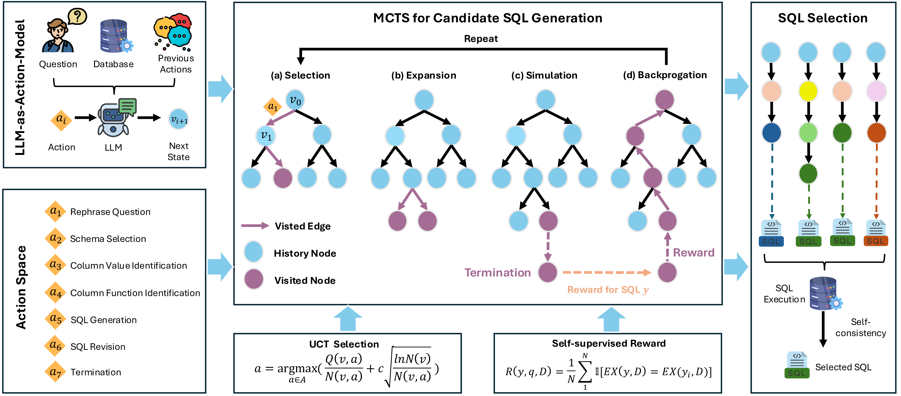
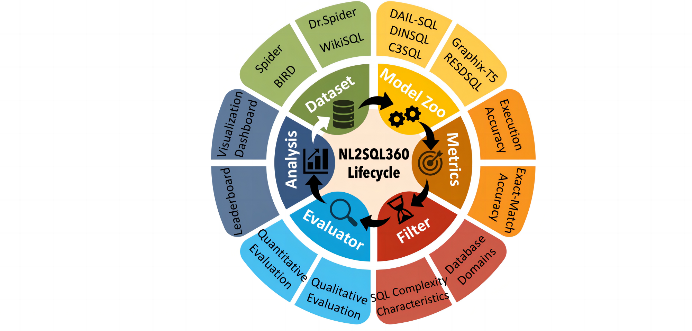

|
I am a second-year Ph.D. student at The Hong Kong University of Science and Technology (Guangzhou), supervised by Prof. Yuyu Luo. My research focuses on AI for Databases and Data Agents, exploring how language models can reason over complex data environments and serve as trustworthy, autonomous interfaces between people and data.
I enjoy building with
Email: bli303@connect.hkust-gz.edu.cn / CV / Twitter Google Scholar / GitHub |
|
Jun. 2026 DataMagic was accepted to the VLDB 2026 Demo Track. May 2026 I received the INFH Research Excellence Award (Merit Prize). Apr. 2026 DPC and ROSE were accepted to ACL 2026 Main. Mar. 2026 We are organizing the KDD Cup 2026 Data Agents competition. Mar. 2026 Two DeepEye works—DeepEye-SQL and the DeepEye system demo—were accepted to SIGMOD 2026. Mar. 2026 DeepEye won a Silver Medal at the 51st Geneva Inventions Exhibition. Earlier newsDec. 2025 I received a Research Excellence Award at the DSA Excellence Awards 2025. Sep. 2025 nvBench 2.0 was accepted to NeurIPS 2025. Jul. 2025 Three works were accepted: DeepVIS to IEEE VIS, our NL2SQL survey to IEEE TKDE, and EllieSQL to COLM. May 2025 NL2SQL-BUGs and Alpha-SQL were accepted to KDD 2025 and ICML 2025. Jan. 2025 HARVis was accepted to CHI 2025. Jan. 2025 I received the Merit Prize for the 2024 DSA Excellent Research Award. Sep. 2024 StatQA was accepted to NeurIPS 2024. Jun. 2024 NL2SQL360 was accepted to VLDB 2024. |
|
 |
Paper / Code / Dataset / Leaderboard Preprint Official KDD Cup 2026 Benchmark A benchmark for data agents performing verifiable analytics across heterogeneous workspaces spanning structured files, databases, documents, and video. |
|
 |
Paper / Code ACL 2026 (Main, CCF-A) DPC selects reliable SQL candidates by verifying consistency between SQL and Python execution on adversarially synthesized, fully observable databases. |
|
 |
Paper / Code ACL 2026 (Main, CCF-A) ROSE evaluates NL2SQL predictions against user intent rather than a single reference SQL, improving alignment with human judgment. |
|
 |
Paper / Homepage / Code SIGMOD 2026 (Demo, CCF-A)
Silver Medal
51st Geneva International Exhibition of Inventions
Best Open-source Project Award
AI Agent 2025 Competition
DeepEye orchestrates heterogeneous data and specialized tools as transparent, steerable workflows for trustworthy multimodal analytics. |
|
 |
Paper / Homepage / Code SIGMOD 2026 (CCF-A)
Huawei Spark Award
DeepEye-SQL treats Text-to-SQL as software engineering, integrating robust grounding, deterministic testing, and confidence-aware selection. |
|
 |
Paper / Code IEEE VIS 2025 (CCF-A) DeepVIS exposes step-wise NL2VIS reasoning, enabling users to inspect and refine how natural-language intent becomes a visualization. |
|
 |
Paper / Homepage / Code ICML 2025 (CCF-A)
Deployed in
Huawei Cloud DataArts Insight
Deployed in
Wuhan Urban Operation Agent
Alpha-SQL uses Monte Carlo Tree Search to progressively construct and evaluate SQL queries, enabling strong zero-shot Text-to-SQL without fine-tuning. |
|
 |
Paper / Homepage / Code VLDB 2024 (CCF-A)
Top-2 Most Cited Paper
Google Scholar (PVLDB 2024)
NL2SQL360 evaluates Text-to-SQL methods across domains, SQL characteristics, and metrics to support scenario-specific model selection. |
|
Tsinghua University · Database Group
Exchange Student · Jun. 2025 – Dec. 2025 Beijing, China Mentored by Prof. Guoliang Li |
|
|